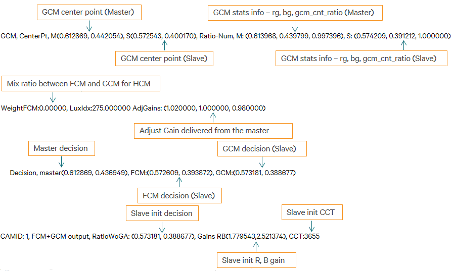
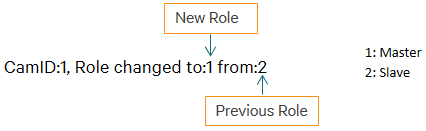
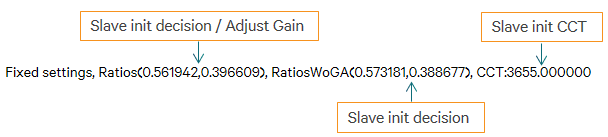

AWB dual camera sync debug message
- Calculate slave init gains and CCT
- Search “GetFCMAndGCMMappedOutput” keyword in log file

- Set slave init gains and CCT
- Search “HandleSetCameraInfo” keyword in log file
- If the role of both cameras is switched, the message
is output in log message

- Search “SetRoleSwitch” keyword in log file
- When the camera role is switched, previous slave
becomes new master. “fixed setting” log should has same values with
the values from GetFCMAndGCMMappedOutput
- New master outputs “Slave to Master, Update master
parameters” log message together
